プログラミングを勉強して初めて開発したアプリです。
ネットにあるサンプルコードを写して、難易度の低いプ
ロジェクトから作成しました。
当初AI開発に興味があり、Pythonに特化した人材を目指
してましたが、今後はPythonでのバックエンドの技術追
求を考えています。

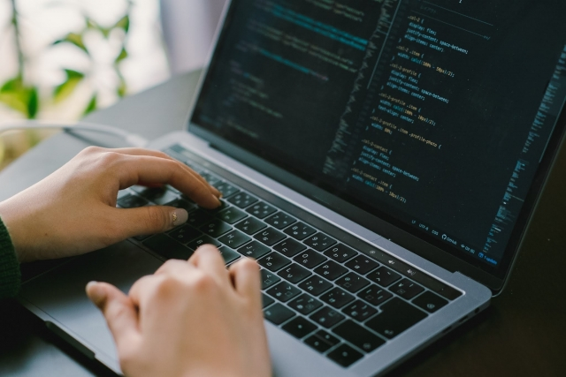
プログラミングを勉強して初めて開発したアプリです。
ネットにあるサンプルコードを写して、難易度の低いプ
ロジェクトから作成しました。
当初AI開発に興味があり、Pythonに特化した人材を目指
してましたが、今後はPythonでのバックエンドの技術追
求を考えています。

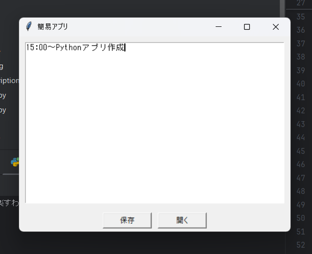
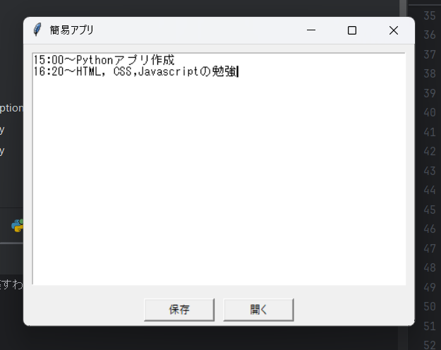
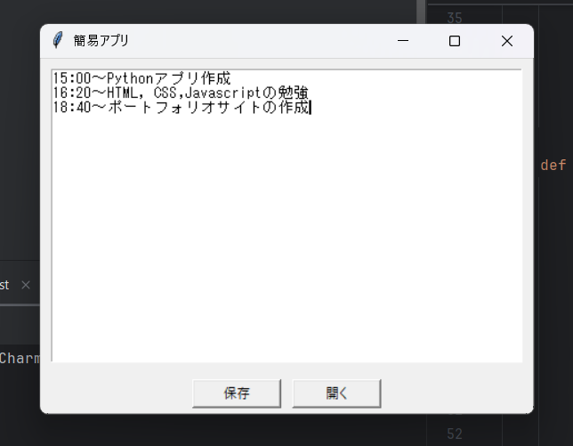

ユーザーインターフェース（UI）:Tkinterライブラリを使用してUIを作成しています。このライブラリはシンプルで初心者に最適です。主な要素には、メモの表示領域、入力フィールド、ボタン（例えば保存、削除、編集など）が含まれます。メモの保存と管理:入力されたメモを保存する機能。データをファイルやデータベースに保存する設計が可能です。すでに存在するメモの編集や削除機能も含めることで、実用性を高めています。動的なイベント処理:bind()などを使用して、ボタンや入力フィールドがユーザーの操作に応じて正しく動作する仕組みを構築できます。


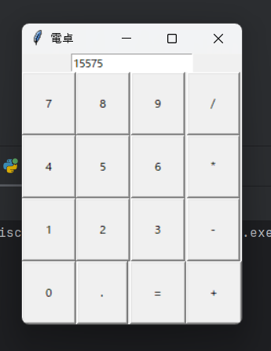

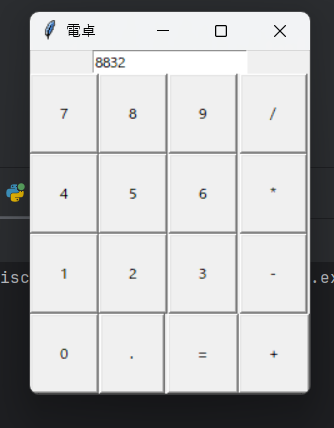
入力機能：ユーザーは数字や演算子（例：+、-、×、÷）を入力できます。これは通常、数字ボタンや演算子ボタンのクリックで実現されます。入力されたデータは、計算処理のために保存されます。演算処理入力された数値と演算子に基づいて計算が実行されます。Pythonのeval関数を使用して計算を効率的に処理します。結果表示計算結果を画面上のラベルやテキストエリアに表示します。ユーザーが追加計算を行いたい場合、入力を続けられるようになっています。クリア機能入力されたデータをすべてリセットし、電卓を初期状態に戻します。GUIレイアウトTkinterライブラリを使用して、ボタン、入力フィールド、結果表示のレイアウトを作成します。コードの構成は、ライブラリのインポートTkinterをインポートして、ウィンドウやウィジェットを作成するための準備を行います。メインウィンドウの作成TkinterのTkクラスを使用して、電卓アプリのメインウィンドウを作成します。titleメソッドでウィンドウタイトルを設定。ウィジェットの作成は、入力フィールド: Entryウィジェットを使用して、ユーザーの入力値を受け取ります。ボタン: 数字や演算子を入力するためのButtonウィジェットを作成します。各ボタンは適切なクリックイベント処理を持っています。イベント処理ユーザーがボタンをクリックしたときの動作を関数で定義します。例えば、数字ボタンを押すと、その数字が入力フィールドに追加されます。=ボタンを押すと演算処理が実行されます。ウィジェットの配置は、Tkinterのgridメソッドを使用して、ボタンや入力フィールドを適切な位置に配置します。


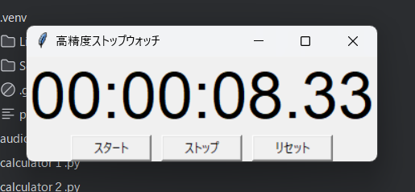

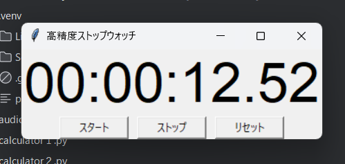
時間の計測開始：ユーザーがスタートボタンをクリックすると、現在時刻を基準として計測が開始されます。start()関数で計測スタートを制御し、計測時間を記録します。時間の表示：計測中の時間がラベルに定期的に更新されます。after()メソッドを使って、短い間隔で時間を更新し、リアルタイムに表示します。計測停止：ストップボタンが押されると、計測が終了し、時間表示の更新も停止します。stop()関数内でラベルの表示を固定します。計測のリセット：必要に応じて計測をリセットし、最初の状態に戻す機能が含まれています。コード構成は、ライブラリのインポート：Tkinterを使用してGUIを構築します。必要に応じてtimeモジュールをインポートします。メインウィンドウの作成：TkinterのTkクラスをインスタンス化して、メイン画面を作成します。アプリのタイトルやサイズもここで設定します。ラベルとボタンの作成：ラベルは時間を表示するためのGUI要素です。ボタンは計測の開始、停止、リセットなどの操作を受け取ります。計測の開始と停止：start()関数で現在時刻を取得し、計測を開始します。stop()関数で計測時間の更新を停止し、現在の時間を表示したままにします。時間の更新処理：after()メソッドを用いて、ラベルの時間を一定間隔で更新します。ストップウォッチのリアルタイム性を実現します。メインループの実行：Tkinterのメインループを開始して、アプリを稼働させます。

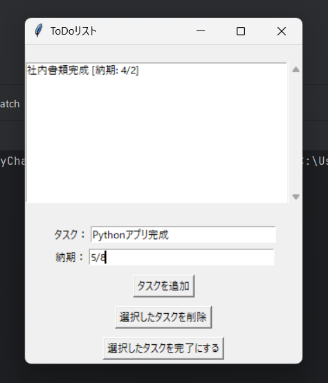
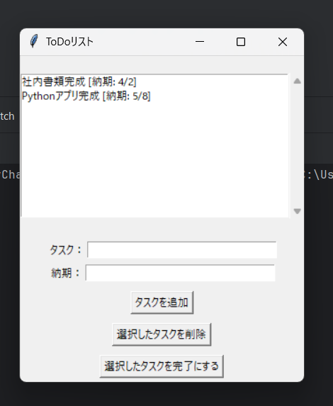
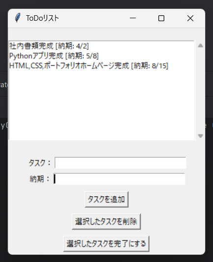
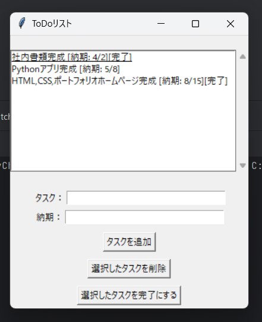
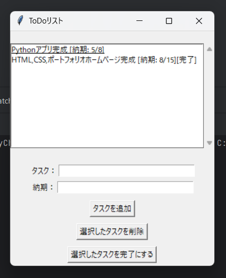
基本機能は、タスクの追加：入力欄（Entryウィジェット）を使用して、新しいタスクを入力します。ボタンをクリックするとタスクがリストに追加されます。タスクの削除：リスト内の選択したタスクを削除できます。ユーザーはリストボックスで削除対象のタスクを選び、ボタンを押すことで実行します。タスクの一覧表示：リストボックスに現在のタスクリストを表示します。新しいタスクが追加されたり削除された場合、リストボックスを更新して表示します。データの保存と読み込み：JSON形式でタスクのデータを保存し、アプリを閉じた後も情報を保持できます。起動時に保存されたデータを読み込む機能があります。ユーザーインターフェース（UI）：Tkinterを使用して、直感的で使いやすいGUIを提供します。リスト表示、ボタン操作、入力欄の配置が特徴です。コード構成は、ライブラリのインポート：Tkinterを使用してGUIを作成します。JSONのデータ操作に必要なjsonモジュールもインポートします。メインウィンドウの作成：TkinterのTkクラスを使用して、ウィンドウを作成します。タイトルやサイズを設定してアプリの外観を整えます。入力欄とボタンの作成：入力欄（Entry）は新しいタスクを受け付けます。追加、削除ボタンはユーザーがタスクを操作するためのものです。リストボックスの作成：現在のタスクリストを表示する領域を作成します。タスク管理ロジック：add_task関数で新しいタスクを追加し、delete_task関数で選択したタスクを削除します。データ操作を効率的に行うため、JSONを活用してタスクリストを保存します。データの保存と読み込み：アプリケーション終了時にタスクをJSONファイルに保存し、次回起動時に読み込む機能を追加します。アプリケーションの起動：メインループを開始して、GUIを表示します。